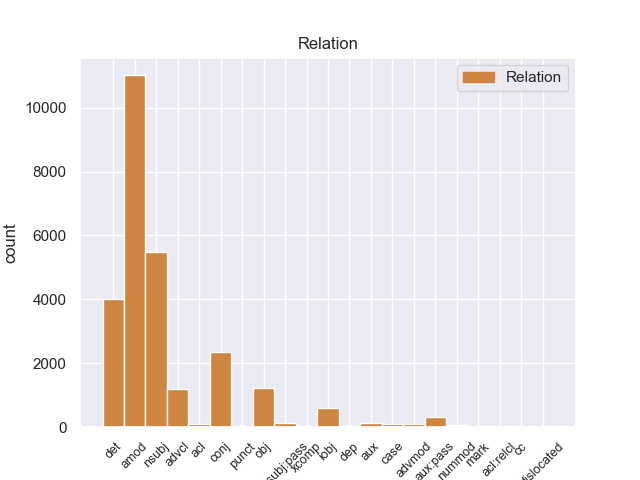
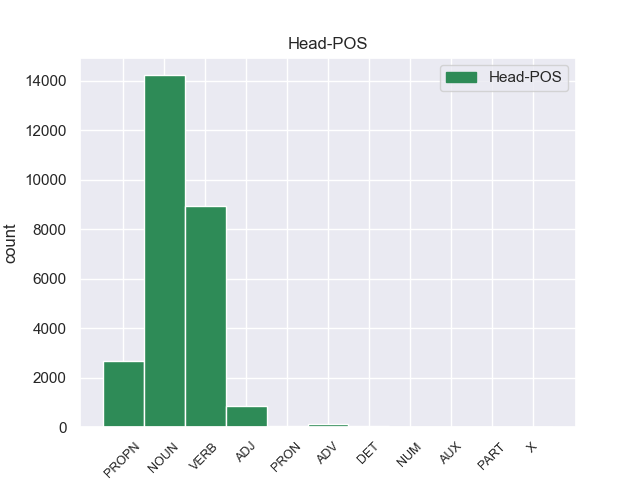
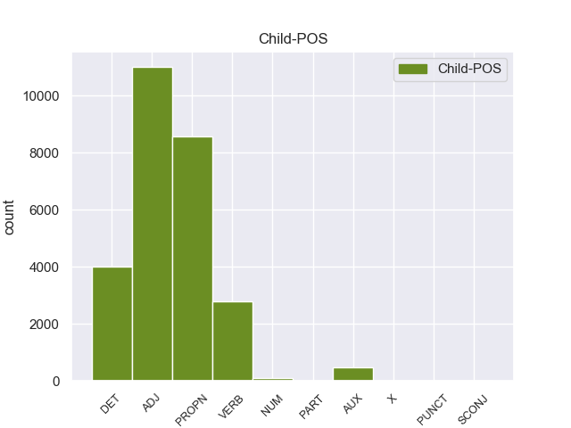

Distribution of features within this leaf



Morphosyntax Rules sorted by frequency.
- When the dependent token is the adjectival modifier(amod) of the head token, and the dependent token is ADJ, the Case needs to be Acc.
1 उन्होंने _ _ _ _ 0 _ _ _
2 कहा _ _ _ _ 0 _ _ _
3 कि _ _ _ _ 0 _ _ _
4 भारत _ _ _ _ 0 _ _ _
5 और _ _ _ _ 0 _ _ _
6 चीन _ _ _ _ 0 _ _ _
7 सर्वाधिक सर्वाधिक ADJ JJ Case=Acc 8 amod _ ChunkId=NP4|ChunkType=child|Translit=sarvādhika
8 आबादी आबादी NOUN NN Case=Acc|Gender=Fem|Number=Sing|Person=3 0 _ _ _
9 वाले _ _ _ _ 0 _ _ _
10 देश _ _ _ _ 0 _ _ _
11 हैं _ _ _ _ 0 _ _ _
12 । _ _ _ _ 0 _ _ _
1 दलाई _ _ _ _ 0 _ _ _
2 लामा लामा PROPN NNP Case=Acc|Gender=Masc|Number=Sing|Person=3 16 nsubj _ ChunkId=NP|ChunkType=head|Tam=0|Translit=lāmā|Vib=0_ने
3 ने _ _ _ _ 0 _ _ _
4 भारत _ _ _ _ 0 _ _ _
5 और _ _ _ _ 0 _ _ _
6 चीन _ _ _ _ 0 _ _ _
7 के _ _ _ _ 0 _ _ _
8 रिश्ते _ _ _ _ 0 _ _ _
9 में _ _ _ _ 0 _ _ _
10 आ _ _ _ _ 0 _ _ _
11 रहे _ _ _ _ 0 _ _ _
12 सुधार _ _ _ _ 0 _ _ _
13 की _ _ _ _ 0 _ _ _
14 भी _ _ _ _ 0 _ _ _
15 प्रशंसा _ _ _ _ 0 _ _ _
16 की कर VERB VM Aspect=Perf|Gender=Fem|Number=Sing|VerbForm=Part|Voice=Act 0 _ _ _
17 । _ _ _ _ 0 _ _ _
1 इन यह DET DEM Case=Acc|Number=Plur|Person=3|PronType=Dem 3 det _ ChunkId=NP|ChunkType=child|Translit=ina
2 दोनों _ _ _ _ 0 _ _ _
3 देशों देश NOUN NN Case=Acc|Gender=Masc|Number=Plur|Person=3 0 _ _ _
4 के _ _ _ _ 0 _ _ _
5 बीच _ _ _ _ 0 _ _ _
6 रिश्ते _ _ _ _ 0 _ _ _
7 में _ _ _ _ 0 _ _ _
8 सुधार _ _ _ _ 0 _ _ _
9 से _ _ _ _ 0 _ _ _
10 करोड़ों _ _ _ _ 0 _ _ _
11 लोगों _ _ _ _ 0 _ _ _
12 का _ _ _ _ 0 _ _ _
13 भला _ _ _ _ 0 _ _ _
14 होगा _ _ _ _ 0 _ _ _
15 । _ _ _ _ 0 _ _ _
1 दलाई _ _ _ _ 0 _ _ _
2 लामा _ _ _ _ 0 _ _ _
3 ने _ _ _ _ 0 _ _ _
4 भारत भारत PROPN NNP Case=Nom|Gender=Masc|Number=Sing|Person=3 0 _ _ _
5 और _ _ _ _ 0 _ _ _
6 चीन चीन PROPN NNP Case=Acc|Gender=Masc|Number=Sing|Person=3 4 conj _ ChunkId=NP3|ChunkType=head|Tam=0|Translit=cīna|Vib=0_का
7 के _ _ _ _ 0 _ _ _
8 रिश्ते _ _ _ _ 0 _ _ _
9 में _ _ _ _ 0 _ _ _
10 आ _ _ _ _ 0 _ _ _
11 रहे _ _ _ _ 0 _ _ _
12 सुधार _ _ _ _ 0 _ _ _
13 की _ _ _ _ 0 _ _ _
14 भी _ _ _ _ 0 _ _ _
15 प्रशंसा _ _ _ _ 0 _ _ _
16 की _ _ _ _ 0 _ _ _
17 । _ _ _ _ 0 _ _ _
1 मुशर्रफ _ _ _ _ 0 _ _ _
2 ने _ _ _ _ 0 _ _ _
3 इस _ _ _ _ 0 _ _ _
4 पर _ _ _ _ 0 _ _ _
5 सहमति _ _ _ _ 0 _ _ _
6 जताई _ _ _ _ 0 _ _ _
7 थी _ _ _ _ 0 _ _ _
8 , _ _ _ _ 0 _ _ _
9 लेकिन _ _ _ _ 0 _ _ _
10 किसी _ _ _ _ 0 _ _ _
11 भी _ _ _ _ 0 _ _ _
12 ग़ैर _ _ _ _ 0 _ _ _
13 पाकिस्तानी _ _ _ _ 0 _ _ _
14 को _ _ _ _ 0 _ _ _
15 खान _ _ _ _ 0 _ _ _
16 से _ _ _ _ 0 _ _ _
17 पूछताछ _ _ _ _ 0 _ _ _
18 की _ _ _ _ 0 _ _ _
19 अनुमति _ _ _ _ 0 _ _ _
20 देने दे VERB VM Case=Acc|VerbForm=Inf 23 advcl _ ChunkId=VGNN|ChunkType=head|Tam=nA|Translit=dene|Vib=ना_से
21 से _ _ _ _ 0 _ _ _
22 इन्कार _ _ _ _ 0 _ _ _
23 कर कर VERB VM Gender=Masc|Number=Sing|Voice=Act 0 _ _ _
24 दिया _ _ _ _ 0 _ _ _
25 था _ _ _ _ 0 _ _ _
26 । _ _ _ _ 0 _ _ _
1 ७० _ _ _ _ 0 _ _ _
2 वर्षीय _ _ _ _ 0 _ _ _
3 इस _ _ _ _ 0 _ _ _
4 अहिंसावादी _ _ _ _ 0 _ _ _
5 तिब्बती _ _ _ _ 0 _ _ _
6 नेता _ _ _ _ 0 _ _ _
7 ने _ _ _ _ 0 _ _ _
8 यह _ _ _ _ 0 _ _ _
9 भी _ _ _ _ 0 _ _ _
10 कहा _ _ _ _ 0 _ _ _
11 कि _ _ _ _ 0 _ _ _
12 वे _ _ _ _ 0 _ _ _
13 चीन चीन PROPN NNP Case=Acc|Gender=Masc|Number=Sing|Person=3 19 obj _ ChunkId=NP4|ChunkType=head|Tam=0|Translit=cīna|Vib=0_से
14 से _ _ _ _ 0 _ _ _
15 अलगाव _ _ _ _ 0 _ _ _
16 की _ _ _ _ 0 _ _ _
17 बात _ _ _ _ 0 _ _ _
18 नहीं _ _ _ _ 0 _ _ _
19 कर कर VERB VM Gender=Masc|Number=Sing|Person=3|Polite=Form|Voice=Act 0 _ _ _
20 रहे _ _ _ _ 0 _ _ _
21 हैं _ _ _ _ 0 _ _ _
22 बल्कि _ _ _ _ 0 _ _ _
23 वे _ _ _ _ 0 _ _ _
24 तो _ _ _ _ 0 _ _ _
25 चीनी _ _ _ _ 0 _ _ _
26 संविधान _ _ _ _ 0 _ _ _
27 के _ _ _ _ 0 _ _ _
28 दायरे _ _ _ _ 0 _ _ _
29 में _ _ _ _ 0 _ _ _
30 ही _ _ _ _ 0 _ _ _
31 तिब्बत _ _ _ _ 0 _ _ _
32 समस्या _ _ _ _ 0 _ _ _
33 का _ _ _ _ 0 _ _ _
34 हल _ _ _ _ 0 _ _ _
35 चाहते _ _ _ _ 0 _ _ _
36 हैं _ _ _ _ 0 _ _ _
37 । _ _ _ _ 0 _ _ _
1 उन्होंने _ _ _ _ 0 _ _ _
2 कहा _ _ _ _ 0 _ _ _
3 कि _ _ _ _ 0 _ _ _
4 चीन _ _ _ _ 0 _ _ _
5 तिब्बत तिब्बत PROPN NNP Case=Acc|Gender=Masc|Number=Sing|Person=3 9 iobj _ ChunkId=NP3|ChunkType=head|Tam=0|Translit=tibbata|Vib=0_को
6 को _ _ _ _ 0 _ _ _
7 व्यापक _ _ _ _ 0 _ _ _
8 स्वायत्तता _ _ _ _ 0 _ _ _
9 देकर दे VERB VM VerbForm=Conv 0 _ _ _
10 इस _ _ _ _ 0 _ _ _
11 समस्या _ _ _ _ 0 _ _ _
12 के _ _ _ _ 0 _ _ _
13 समाधान _ _ _ _ 0 _ _ _
14 का _ _ _ _ 0 _ _ _
15 रास्ता _ _ _ _ 0 _ _ _
16 साफ _ _ _ _ 0 _ _ _
17 कर _ _ _ _ 0 _ _ _
18 सकता _ _ _ _ 0 _ _ _
19 है _ _ _ _ 0 _ _ _
20 । _ _ _ _ 0 _ _ _
1 उनका _ _ _ _ 0 _ _ _
2 कहना _ _ _ _ 0 _ _ _
3 है _ _ _ _ 0 _ _ _
4 कि _ _ _ _ 0 _ _ _
5 छोटे _ _ _ _ 0 _ _ _
6 शहरों _ _ _ _ 0 _ _ _
7 व _ _ _ _ 0 _ _ _
8 गाँवों _ _ _ _ 0 _ _ _
9 में _ _ _ _ 0 _ _ _
10 रहने रह VERB VM Case=Acc|Number=Plur|VerbForm=Inf 12 amod _ ChunkId=VGNN2|ChunkType=head|Tam=nA|Translit=rahane|Vib=ना_वाला
11 वाले _ _ _ _ 0 _ _ _
12 लोगों लोग NOUN NN Case=Acc|Gender=Masc|Number=Plur|Person=3 0 _ _ _
13 को _ _ _ _ 0 _ _ _
14 ट्रेन _ _ _ _ 0 _ _ _
15 के _ _ _ _ 0 _ _ _
16 जरिये _ _ _ _ 0 _ _ _
17 पर्यटन _ _ _ _ 0 _ _ _
18 की _ _ _ _ 0 _ _ _
19 कोई _ _ _ _ 0 _ _ _
20 सुविधा _ _ _ _ 0 _ _ _
21 नहीं _ _ _ _ 0 _ _ _
22 मिलती _ _ _ _ 0 _ _ _
23 । _ _ _ _ 0 _ _ _
1 मैं _ _ _ _ 0 _ _ _
2 चीनी _ _ _ _ 0 _ _ _
3 संविधान _ _ _ _ 0 _ _ _
4 के _ _ _ _ 0 _ _ _
5 तहत _ _ _ _ 0 _ _ _
6 ही _ _ _ _ 0 _ _ _
7 तिब्बती _ _ _ _ 0 _ _ _
8 समस्या _ _ _ _ 0 _ _ _
9 का _ _ _ _ 0 _ _ _
10 समाधान _ _ _ _ 0 _ _ _
11 निकाले निकाल VERB VM Aspect=Perf|Number=Sing|VerbForm=Part 0 _ _ _
12 जाने जा AUX VAUX Case=Acc|VerbForm=Inf 11 aux:pass _ ChunkId=VGNN|ChunkType=child|Tam=nA|Translit=jāne|Vib=ना
13 के _ _ _ _ 0 _ _ _
14 पक्ष _ _ _ _ 0 _ _ _
15 में _ _ _ _ 0 _ _ _
16 हूं _ _ _ _ 0 _ _ _
17 । _ _ _ _ 0 _ _ _
1 पर्यवेक्षकों _ _ _ _ 0 _ _ _
2 का _ _ _ _ 0 _ _ _
3 कहना _ _ _ _ 0 _ _ _
4 है _ _ _ _ 0 _ _ _
5 कि _ _ _ _ 0 _ _ _
6 इस _ _ _ _ 0 _ _ _
7 मार्च _ _ _ _ 0 _ _ _
8 के _ _ _ _ 0 _ _ _
9 दौरान _ _ _ _ 0 _ _ _
10 कांग्रेसियों _ _ _ _ 0 _ _ _
11 ने _ _ _ _ 0 _ _ _
12 भाजपा _ _ _ _ 0 _ _ _
13 का _ _ _ _ 0 _ _ _
14 जिक्र _ _ _ _ 0 _ _ _
15 करने कर VERB VM Case=Acc|VerbForm=Inf 18 obj _ ChunkId=VGNN2|ChunkType=head|Tam=nA|Translit=karane|Vib=ना_से
16 से _ _ _ _ 0 _ _ _
17 परहेज _ _ _ _ 0 _ _ _
18 कर कर VERB VM _ 0 _ _ _
19 लोगों _ _ _ _ 0 _ _ _
20 में _ _ _ _ 0 _ _ _
21 यह _ _ _ _ 0 _ _ _
22 संदेश _ _ _ _ 0 _ _ _
23 दिया _ _ _ _ 0 _ _ _
24 कि _ _ _ _ 0 _ _ _
25 वह _ _ _ _ 0 _ _ _
26 गांधीवादी _ _ _ _ 0 _ _ _
27 विरासत _ _ _ _ 0 _ _ _
28 को _ _ _ _ 0 _ _ _
29 लेकर _ _ _ _ 0 _ _ _
30 भाजपा _ _ _ _ 0 _ _ _
31 या _ _ _ _ 0 _ _ _
32 किसी _ _ _ _ 0 _ _ _
33 अन्य _ _ _ _ 0 _ _ _
34 पार्टी _ _ _ _ 0 _ _ _
35 से _ _ _ _ 0 _ _ _
36 टकराव _ _ _ _ 0 _ _ _
37 नहीं _ _ _ _ 0 _ _ _
38 चाहती _ _ _ _ 0 _ _ _
39 है _ _ _ _ 0 _ _ _
40 । _ _ _ _ 0 _ _ _
1 ऐसा _ _ _ _ 0 _ _ _
2 होने _ _ _ _ 0 _ _ _
3 की _ _ _ _ 0 _ _ _
4 स्थिति _ _ _ _ 0 _ _ _
5 में _ _ _ _ 0 _ _ _
6 शिक्षकों _ _ _ _ 0 _ _ _
7 के _ _ _ _ 0 _ _ _
8 लिए _ _ _ _ 0 _ _ _
9 पाठ्य _ _ _ _ 0 _ _ _
10 - _ _ _ _ 0 _ _ _
11 पुस्तकों _ _ _ _ 0 _ _ _
12 के _ _ _ _ 0 _ _ _
13 कुछ _ _ _ _ 0 _ _ _
14 अंश _ _ _ _ 0 _ _ _
15 न _ _ _ _ 0 _ _ _
16 पढ़ाने पढ़ा VERB VM Case=Acc|VerbForm=Inf 0 _ _ _
17 और _ _ _ _ 0 _ _ _
18 कुछ _ _ _ _ 0 _ _ _
19 अलग _ _ _ _ 0 _ _ _
20 से _ _ _ _ 0 _ _ _
21 पढ़ाने पढ़ा VERB VM Case=Acc|Number=Plur|VerbForm=Inf 16 conj _ ChunkId=VGNN3|ChunkType=head|Tam=nA|Translit=paṛhāne|Vib=ना_जैसा
22 जैसे _ _ _ _ 0 _ _ _
23 दिशा _ _ _ _ 0 _ _ _
24 - _ _ _ _ 0 _ _ _
25 निर्देश _ _ _ _ 0 _ _ _
26 भी _ _ _ _ 0 _ _ _
27 जारी _ _ _ _ 0 _ _ _
28 किए _ _ _ _ 0 _ _ _
29 जा _ _ _ _ 0 _ _ _
30 सकते _ _ _ _ 0 _ _ _
31 हैं _ _ _ _ 0 _ _ _
32 । _ _ _ _ 0 _ _ _
1 उल्लेखनीय _ _ _ _ 0 _ _ _
2 है _ _ _ _ 0 _ _ _
3 कि _ _ _ _ 0 _ _ _
4 विनिवेश _ _ _ _ 0 _ _ _
5 मंत्रालय _ _ _ _ 0 _ _ _
6 द्वारा _ _ _ _ 0 _ _ _
7 नियुक्त _ _ _ _ 0 _ _ _
8 किए _ _ _ _ 0 _ _ _
9 गए _ _ _ _ 0 _ _ _
10 विनिवेश _ _ _ _ 0 _ _ _
11 आयोग _ _ _ _ 0 _ _ _
12 ने _ _ _ _ 0 _ _ _
13 दिसंबर _ _ _ _ 0 _ _ _
14 1997 _ _ _ _ 0 _ _ _
15 में _ _ _ _ 0 _ _ _
16 एअर _ _ _ _ 0 _ _ _
17 इंडिया _ _ _ _ 0 _ _ _
18 के _ _ _ _ 0 _ _ _
19 मुंबई _ _ _ _ 0 _ _ _
20 स्थित _ _ _ _ 0 _ _ _
21 दो _ _ _ _ 0 _ _ _
22 होटलों _ _ _ _ 0 _ _ _
23 जुहू _ _ _ _ 0 _ _ _
24 सेंटॉर _ _ _ _ 0 _ _ _
25 और _ _ _ _ 0 _ _ _
26 एअरपोर्ट _ _ _ _ 0 _ _ _
27 सेंटॉर _ _ _ _ 0 _ _ _
28 को _ _ _ _ 0 _ _ _
29 बेचने _ _ _ _ 0 _ _ _
30 की _ _ _ _ 0 _ _ _
31 सिफारिश _ _ _ _ 0 _ _ _
32 की _ _ _ _ 0 _ _ _
33 थी _ _ _ _ 0 _ _ _
34 , _ _ _ _ 0 _ _ _
35 जिसे _ _ _ _ 0 _ _ _
36 एअर _ _ _ _ 0 _ _ _
37 इंडिया इंडिया PROPN NNP Case=Acc|Gender=Fem|Number=Sing|Person=3 43 nsubj:pass _ ChunkId=NP11|ChunkType=head|Tam=0|Translit=iṁḍiyā|Vib=0_द्वारा
38 द्वारा _ _ _ _ 0 _ _ _
39 जुलाई _ _ _ _ 0 _ _ _
40 1998 _ _ _ _ 0 _ _ _
41 में _ _ _ _ 0 _ _ _
42 स्वीकार _ _ _ _ 0 _ _ _
43 कर कर VERB VM Gender=Masc|Number=Sing|Voice=Pass 0 _ _ _
44 लिया _ _ _ _ 0 _ _ _
45 गया _ _ _ _ 0 _ _ _
46 । _ _ _ _ 0 _ _ _
1 खान _ _ _ _ 0 _ _ _
2 के _ _ _ _ 0 _ _ _
3 संदिग्ध _ _ _ _ 0 _ _ _
4 परमाणु _ _ _ _ 0 _ _ _
5 ग्राहकों _ _ _ _ 0 _ _ _
6 की _ _ _ _ 0 _ _ _
7 सूची _ _ _ _ 0 _ _ _
8 को _ _ _ _ 0 _ _ _
9 आश्चर्य _ _ _ _ 0 _ _ _
10 में _ _ _ _ 0 _ _ _
11 डाल डाल VERB VM Number=Sing 0 _ _ _
12 देने दे AUX VAUX Case=Acc|VerbForm=Inf 11 aux _ ChunkId=VGNN|ChunkType=child|Tam=nA|Translit=dene|Vib=ना
13 वाली _ _ _ _ 0 _ _ _
14 बताते _ _ _ _ 0 _ _ _
15 हुए _ _ _ _ 0 _ _ _
16 टाईम _ _ _ _ 0 _ _ _
17 पत्रिका _ _ _ _ 0 _ _ _
18 के _ _ _ _ 0 _ _ _
19 हाल _ _ _ _ 0 _ _ _
20 के _ _ _ _ 0 _ _ _
21 अंक _ _ _ _ 0 _ _ _
22 में _ _ _ _ 0 _ _ _
23 कहा _ _ _ _ 0 _ _ _
24 गया _ _ _ _ 0 _ _ _
25 कि _ _ _ _ 0 _ _ _
26 पाकिस्तान _ _ _ _ 0 _ _ _
27 की _ _ _ _ 0 _ _ _
28 परमाणु _ _ _ _ 0 _ _ _
29 शोध _ _ _ _ 0 _ _ _
30 प्रयोगशाला _ _ _ _ 0 _ _ _
31 का _ _ _ _ 0 _ _ _
32 प्रमुख _ _ _ _ 0 _ _ _
33 होने _ _ _ _ 0 _ _ _
34 के _ _ _ _ 0 _ _ _
35 नाते _ _ _ _ 0 _ _ _
36 खान _ _ _ _ 0 _ _ _
37 ने _ _ _ _ 0 _ _ _
38 एक _ _ _ _ 0 _ _ _
39 दशक _ _ _ _ 0 _ _ _
40 से _ _ _ _ 0 _ _ _
41 भी _ _ _ _ 0 _ _ _
42 अधिक _ _ _ _ 0 _ _ _
43 समय _ _ _ _ 0 _ _ _
44 में _ _ _ _ 0 _ _ _
45 पूरे _ _ _ _ 0 _ _ _
46 विश्व _ _ _ _ 0 _ _ _
47 की _ _ _ _ 0 _ _ _
48 यात्रा _ _ _ _ 0 _ _ _
49 की _ _ _ _ 0 _ _ _
50 । _ _ _ _ 0 _ _ _
1 चीनी _ _ _ _ 0 _ _ _
2 प्रधानमंत्री _ _ _ _ 0 _ _ _
3 वेन _ _ _ _ 0 _ _ _
4 जियाबाओ _ _ _ _ 0 _ _ _
5 की _ _ _ _ 0 _ _ _
6 भारत _ _ _ _ 0 _ _ _
7 यात्रा _ _ _ _ 0 _ _ _
8 से _ _ _ _ 0 _ _ _
9 पहले _ _ _ _ 0 _ _ _
10 निर्वासित _ _ _ _ 0 _ _ _
11 तिब्बती _ _ _ _ 0 _ _ _
12 आध्यात्मिक _ _ _ _ 0 _ _ _
13 नेता _ _ _ _ 0 _ _ _
14 दलाई _ _ _ _ 0 _ _ _
15 लामा _ _ _ _ 0 _ _ _
16 ने _ _ _ _ 0 _ _ _
17 कहा _ _ _ _ 0 _ _ _
18 है _ _ _ _ 0 _ _ _
19 कि _ _ _ _ 0 _ _ _
20 चीनी चीनी ADJ JJ Case=Acc 0 _ _ _
21 और _ _ _ _ 0 _ _ _
22 तिब्बती तिब्बती ADJ JJ Case=Acc 20 conj _ ChunkId=JJP3|ChunkType=head|Translit=tibbatī
23 एक _ _ _ _ 0 _ _ _
24 - _ _ _ _ 0 _ _ _
25 दूसरे _ _ _ _ 0 _ _ _
26 की _ _ _ _ 0 _ _ _
27 सांस्कृतिक _ _ _ _ 0 _ _ _
28 विशिष्टता _ _ _ _ 0 _ _ _
29 का _ _ _ _ 0 _ _ _
30 आदर _ _ _ _ 0 _ _ _
31 करते _ _ _ _ 0 _ _ _
32 हैं _ _ _ _ 0 _ _ _
33 । _ _ _ _ 0 _ _ _
1 ऐसे _ _ _ _ 0 _ _ _
2 में _ _ _ _ 0 _ _ _
3 वायुसेना _ _ _ _ 0 _ _ _
4 की _ _ _ _ 0 _ _ _
5 संचालन _ _ _ _ 0 _ _ _
6 क्षमता _ _ _ _ 0 _ _ _
7 को _ _ _ _ 0 _ _ _
8 बनाए _ _ _ _ 0 _ _ _
9 रखने _ _ _ _ 0 _ _ _
10 के _ _ _ _ 0 _ _ _
11 लिए _ _ _ _ 0 _ _ _
12 ऐसा _ _ _ _ 0 _ _ _
13 करना कर VERB VM Case=Acc|VerbForm=Inf 17 nsubj _ ChunkId=VGNN2|ChunkType=head|Tam=nA|Translit=karanā|Vib=ना
14 बहुत _ _ _ _ 0 _ _ _
15 ही _ _ _ _ 0 _ _ _
16 जरूरी _ _ _ _ 0 _ _ _
17 है है VERB VM Mood=Ind|Number=Sing|Person=3|Tense=Pres|VerbForm=Fin|Voice=Act 0 _ _ _
18 । _ _ _ _ 0 _ _ _
1 उत्तरांचल _ _ _ _ 0 _ _ _
2 में _ _ _ _ 0 _ _ _
3 १०१६ १०१६ NUM QC Case=Acc|Number=Plur|NumType=Card 8 nummod _ ChunkId=NP2|ChunkType=head|Translit=1016|Vib=0_के_मुकाबला
4 के _ _ _ _ 0 _ _ _
5 मुकाबले _ _ _ _ 0 _ _ _
6 ९०८ _ _ _ _ 0 _ _ _
7 मिमी _ _ _ _ 0 _ _ _
8 बारिश बारिश NOUN NN Case=Nom|Gender=Fem|Number=Sing|Person=3 0 _ _ _
9 हुई _ _ _ _ 0 _ _ _
10 है _ _ _ _ 0 _ _ _
11 जो _ _ _ _ 0 _ _ _
12 औसत _ _ _ _ 0 _ _ _
13 से _ _ _ _ 0 _ _ _
14 ११ _ _ _ _ 0 _ _ _
15 फीसदी _ _ _ _ 0 _ _ _
16 कम _ _ _ _ 0 _ _ _
17 है _ _ _ _ 0 _ _ _
18 । _ _ _ _ 0 _ _ _
1 पाकिस्तान _ _ _ _ 0 _ _ _
2 , _ _ _ _ 0 _ _ _
3 उत्तरी _ _ _ _ 0 _ _ _
4 कोरिया _ _ _ _ 0 _ _ _
5 और _ _ _ _ 0 _ _ _
6 चीन _ _ _ _ 0 _ _ _
7 द्वारा _ _ _ _ 0 _ _ _
8 परमाणु _ _ _ _ 0 _ _ _
9 अप्रसार _ _ _ _ 0 _ _ _
10 संधि _ _ _ _ 0 _ _ _
11 के _ _ _ _ 0 _ _ _
12 उल्लंधन _ _ _ _ 0 _ _ _
13 पर _ _ _ _ 0 _ _ _
14 क्लिंटन _ _ _ _ 0 _ _ _
15 और _ _ _ _ 0 _ _ _
16 बुश _ _ _ _ 0 _ _ _
17 दोनों _ _ _ _ 0 _ _ _
18 की _ _ _ _ 0 _ _ _
19 ही _ _ _ _ 0 _ _ _
20 नीतियां _ _ _ _ 0 _ _ _
21 निराश _ _ _ _ 0 _ _ _
22 करने कर VERB VM Case=Acc|Number=Plur|VerbForm=Inf 24 acl _ ChunkId=VGNN|ChunkType=head|Tam=nA|Translit=karane|Vib=ना_वाला
23 वाली _ _ _ _ 0 _ _ _
24 रही रह VERB VM Aspect=Perf|Gender=Fem|Number=Plur|Person=3|VerbForm=Part|Voice=Act 0 _ _ _
25 हैं _ _ _ _ 0 _ _ _
26 । _ _ _ _ 0 _ _ _
1 अगर _ _ _ _ 0 _ _ _
2 परिवार _ _ _ _ 0 _ _ _
3 का _ _ _ _ 0 _ _ _
4 कोई _ _ _ _ 0 _ _ _
5 भी _ _ _ _ 0 _ _ _
6 सदस्य _ _ _ _ 0 _ _ _
7 इस _ _ _ _ 0 _ _ _
8 कंपनी _ _ _ _ 0 _ _ _
9 को _ _ _ _ 0 _ _ _
10 चलाने चला VERB VM Case=Acc|Number=Sing|VerbForm=Inf 12 advmod _ ChunkId=VGNN|ChunkType=head|Tam=nA|Translit=calāne|Vib=ना_का
11 का _ _ _ _ 0 _ _ _
12 इच्छुक इच्छुक ADJ JJ _ 0 _ _ _
13 है _ _ _ _ 0 _ _ _
14 तो _ _ _ _ 0 _ _ _
15 उसके _ _ _ _ 0 _ _ _
16 पास _ _ _ _ 0 _ _ _
17 एक _ _ _ _ 0 _ _ _
18 बेहतर _ _ _ _ 0 _ _ _
19 मौका _ _ _ _ 0 _ _ _
20 है _ _ _ _ 0 _ _ _
1 दर्ज _ _ _ _ 0 _ _ _
2 रिकार्ड _ _ _ _ 0 _ _ _
3 के _ _ _ _ 0 _ _ _
4 मुताबिक _ _ _ _ 0 _ _ _
5 उस _ _ _ _ 0 _ _ _
6 समय _ _ _ _ 0 _ _ _
7 आए _ _ _ _ 0 _ _ _
8 इस _ _ _ _ 0 _ _ _
9 सुनामी _ _ _ _ 0 _ _ _
10 कहर _ _ _ _ 0 _ _ _
11 से _ _ _ _ 0 _ _ _
12 तीन _ _ _ _ 0 _ _ _
13 लाख लाख NUM QC Case=Acc|NumType=Card 15 advmod _ ChunkId=NP4|ChunkType=head|Translit=lākha|Vib=0_से
14 से _ _ _ _ 0 _ _ _
15 अधिक अधिक DET QF PronType=Ind 0 _ _ _
16 लोग _ _ _ _ 0 _ _ _
17 हताहत _ _ _ _ 0 _ _ _
18 हुए _ _ _ _ 0 _ _ _
19 थे _ _ _ _ 0 _ _ _
20 । _ _ _ _ 0 _ _ _
1 इसके _ _ _ _ 0 _ _ _
2 बाद _ _ _ _ 0 _ _ _
3 सभी _ _ _ _ 0 _ _ _
4 नई नया ADJ JJ Case=Acc|Gender=Fem|Number=Plur 0 _ _ _
5 - _ _ _ _ 0 _ _ _
6 पुरानी पुराना ADJ JJ Case=Acc|Gender=Fem|Number=Plur 4 punct _ ChunkId=NP2|ChunkType=child|Translit=purānī
7 इमारतों _ _ _ _ 0 _ _ _
8 के _ _ _ _ 0 _ _ _
9 लिए _ _ _ _ 0 _ _ _
10 इसे _ _ _ _ 0 _ _ _
11 अनिवार्य _ _ _ _ 0 _ _ _
12 कर _ _ _ _ 0 _ _ _
13 दिया _ _ _ _ 0 _ _ _
14 जाएगा _ _ _ _ 0 _ _ _
15 । _ _ _ _ 0 _ _ _
1 ब्रेमर _ _ _ _ 0 _ _ _
2 ने _ _ _ _ 0 _ _ _
3 अमेरिका _ _ _ _ 0 _ _ _
4 के _ _ _ _ 0 _ _ _
5 सैनिक _ _ _ _ 0 _ _ _
6 विमान _ _ _ _ 0 _ _ _
7 सी _ _ _ _ 0 _ _ _
8 - _ _ _ _ 0 _ _ _
9 130 _ _ _ _ 0 _ _ _
10 से _ _ _ _ 0 _ _ _
11 रवाना _ _ _ _ 0 _ _ _
12 होने _ _ _ _ 0 _ _ _
13 से _ _ _ _ 0 _ _ _
14 पहले _ _ _ _ 0 _ _ _
15 सालेह _ _ _ _ 0 _ _ _
16 से _ _ _ _ 0 _ _ _
17 हाथ _ _ _ _ 0 _ _ _
18 मिलाया _ _ _ _ 0 _ _ _
19 और _ _ _ _ 0 _ _ _
20 वहां _ _ _ _ 0 _ _ _
21 मौजूद मौजूद ADJ JJ Case=Acc 22 advmod _ ChunkId=JJP2|ChunkType=head|Translit=maujūda
22 पत्रकारों पत्रकार NOUN NN Case=Acc|Gender=Masc|Number=Plur|Person=3 0 _ _ _
23 से _ _ _ _ 0 _ _ _
24 बिना _ _ _ _ 0 _ _ _
25 कोई _ _ _ _ 0 _ _ _
26 बात _ _ _ _ 0 _ _ _
27 किए _ _ _ _ 0 _ _ _
28 वह _ _ _ _ 0 _ _ _
29 रवाना _ _ _ _ 0 _ _ _
30 हो _ _ _ _ 0 _ _ _
31 गए _ _ _ _ 0 _ _ _
32 । _ _ _ _ 0 _ _ _
1 भारत _ _ _ _ 0 _ _ _
2 इस _ _ _ _ 0 _ _ _
3 शोध _ _ _ _ 0 _ _ _
4 में _ _ _ _ 0 _ _ _
5 पूरी _ _ _ _ 0 _ _ _
6 मदद _ _ _ _ 0 _ _ _
7 देने दे VERB VM Case=Acc|VerbForm=Inf 10 iobj _ ChunkId=VGNN|ChunkType=head|Tam=nA|Translit=dene|Vib=ना_को
8 को _ _ _ _ 0 _ _ _
9 तैयार _ _ _ _ 0 _ _ _
10 है है VERB VM Mood=Ind|Number=Sing|Person=3|Tense=Pres|VerbForm=Fin|Voice=Act 0 _ _ _
11 । _ _ _ _ 0 _ _ _
1 इनमें _ _ _ _ 0 _ _ _
2 से _ _ _ _ 0 _ _ _
3 एक _ _ _ _ 0 _ _ _
4 की _ _ _ _ 0 _ _ _
5 हत्या _ _ _ _ 0 _ _ _
6 कर _ _ _ _ 0 _ _ _
7 दी _ _ _ _ 0 _ _ _
8 गई _ _ _ _ 0 _ _ _
9 और _ _ _ _ 0 _ _ _
10 दो दो NUM QC Case=Acc|NumType=Card 16 obj _ ChunkId=NP4|ChunkType=head|Translit=do|Vib=0_को
11 को _ _ _ _ 0 _ _ _
12 गंभीर _ _ _ _ 0 _ _ _
13 रूप _ _ _ _ 0 _ _ _
14 से _ _ _ _ 0 _ _ _
15 घायल _ _ _ _ 0 _ _ _
16 कर कर VERB VM Number=Sing|Voice=Act 0 _ _ _
17 दिया _ _ _ _ 0 _ _ _
18 । _ _ _ _ 0 _ _ _
1 रिवर्स _ _ _ _ 0 _ _ _
2 रेपो _ _ _ _ 0 _ _ _
3 रेट _ _ _ _ 0 _ _ _
4 वह _ _ _ _ 0 _ _ _
5 दर _ _ _ _ 0 _ _ _
6 है _ _ _ _ 0 _ _ _
7 जिस _ _ _ _ 0 _ _ _
8 पर _ _ _ _ 0 _ _ _
9 बैंकों _ _ _ _ 0 _ _ _
10 को _ _ _ _ 0 _ _ _
11 आरबीआई _ _ _ _ 0 _ _ _
12 के _ _ _ _ 0 _ _ _
13 पास _ _ _ _ 0 _ _ _
14 जमा जमा ADJ JJ Case=Acc 16 acl _ ChunkId=JJP|ChunkType=head|Translit=jamā
15 अतिरिक्त _ _ _ _ 0 _ _ _
16 रकम रकम NOUN NN Case=Acc|Gender=Fem|Number=Sing|Person=3 0 _ _ _
17 पर _ _ _ _ 0 _ _ _
18 ब्याज _ _ _ _ 0 _ _ _
19 मिलता _ _ _ _ 0 _ _ _
20 है _ _ _ _ 0 _ _ _
21 । _ _ _ _ 0 _ _ _
1 उसने _ _ _ _ 0 _ _ _
2 अभी _ _ _ _ 0 _ _ _
3 तक _ _ _ _ 0 _ _ _
4 २८.७२ _ _ _ _ 0 _ _ _
5 लाख _ _ _ _ 0 _ _ _
6 रुपये _ _ _ _ 0 _ _ _
7 जब्त _ _ _ _ 0 _ _ _
8 किए _ _ _ _ 0 _ _ _
9 हैं _ _ _ _ 0 _ _ _
10 और _ _ _ _ 0 _ _ _
11 ७.४३ _ _ _ _ 0 _ _ _
12 करोड़ _ _ _ _ 0 _ _ _
13 रुपये _ _ _ _ 0 _ _ _
14 की _ _ _ _ 0 _ _ _
15 चल चल ADJ JJC Case=Acc 17 case _ ChunkId=NP5|ChunkType=child|Translit=cala
16 - _ _ _ _ 0 _ _ _
17 अचल अचल ADJ JJ Case=Acc 0 _ _ _
18 संपति _ _ _ _ 0 _ _ _
19 का _ _ _ _ 0 _ _ _
20 पता _ _ _ _ 0 _ _ _
21 चला _ _ _ _ 0 _ _ _
22 है _ _ _ _ 0 _ _ _
23 । _ _ _ _ 0 _ _ _
1 कैबिनेट _ _ _ _ 0 _ _ _
2 की _ _ _ _ 0 _ _ _
3 बैठक _ _ _ _ 0 _ _ _
4 के _ _ _ _ 0 _ _ _
5 बाद _ _ _ _ 0 _ _ _
6 सूचना _ _ _ _ 0 _ _ _
7 और _ _ _ _ 0 _ _ _
8 प्रसारण _ _ _ _ 0 _ _ _
9 मंत्री _ _ _ _ 0 _ _ _
10 एस _ _ _ _ 0 _ _ _
11 जयपाल _ _ _ _ 0 _ _ _
12 रेड्डी _ _ _ _ 0 _ _ _
13 ने _ _ _ _ 0 _ _ _
14 बताया _ _ _ _ 0 _ _ _
15 कि _ _ _ _ 0 _ _ _
16 इसमें _ _ _ _ 0 _ _ _
17 उपभोक्ताओं _ _ _ _ 0 _ _ _
18 के _ _ _ _ 0 _ _ _
19 हितों _ _ _ _ 0 _ _ _
20 के _ _ _ _ 0 _ _ _
21 संरक्षण _ _ _ _ 0 _ _ _
22 के _ _ _ _ 0 _ _ _
23 लिए _ _ _ _ 0 _ _ _
24 पेट्रोलियम _ _ _ _ 0 _ _ _
25 और _ _ _ _ 0 _ _ _
26 प्राकृतिक _ _ _ _ 0 _ _ _
27 गैस गैस NOUN NN Case=Acc|Gender=Fem|Number=Sing|Person=3 0 _ _ _
28 जैसे जैसा PART RP Case=Acc|Gender=Masc 27 dep _ ChunkId=NP9|ChunkType=child|Translit=jaise
29 पेट्रोलियम _ _ _ _ 0 _ _ _
30 उत्पादों _ _ _ _ 0 _ _ _
31 के _ _ _ _ 0 _ _ _
32 लिए _ _ _ _ 0 _ _ _
33 नियामक _ _ _ _ 0 _ _ _
34 बोर्ड _ _ _ _ 0 _ _ _
35 बनाने _ _ _ _ 0 _ _ _
36 का _ _ _ _ 0 _ _ _
37 प्रस्ताव _ _ _ _ 0 _ _ _
38 दिया _ _ _ _ 0 _ _ _
39 गया _ _ _ _ 0 _ _ _
40 है _ _ _ _ 0 _ _ _
41 । _ _ _ _ 0 _ _ _
1 रविवार _ _ _ _ 0 _ _ _
2 को _ _ _ _ 0 _ _ _
3 ' _ _ _ _ 0 _ _ _
4 दी _ _ _ _ 0 _ _ _
5 मेल _ _ _ _ 0 _ _ _
6 ' _ _ _ _ 0 _ _ _
7 ने _ _ _ _ 0 _ _ _
8 एफबीआई _ _ _ _ 0 _ _ _
9 के _ _ _ _ 0 _ _ _
10 हवाले _ _ _ _ 0 _ _ _
11 से _ _ _ _ 0 _ _ _
12 लिखा _ _ _ _ 0 _ _ _
13 कि _ _ _ _ 0 _ _ _
14 7 _ _ _ _ 0 _ _ _
15 जुलाई _ _ _ _ 0 _ _ _
16 को _ _ _ _ 0 _ _ _
17 लंदन _ _ _ _ 0 _ _ _
18 में _ _ _ _ 0 _ _ _
19 हुए _ _ _ _ 0 _ _ _
20 धमाकों _ _ _ _ 0 _ _ _
21 के _ _ _ _ 0 _ _ _
22 पीछे _ _ _ _ 0 _ _ _
23 असवत _ _ _ _ 0 _ _ _
24 का _ _ _ _ 0 _ _ _
25 ही _ _ _ _ 0 _ _ _
26 हाथ _ _ _ _ 0 _ _ _
27 है _ _ _ _ 0 _ _ _
28 , _ _ _ _ 0 _ _ _
29 लेकिन _ _ _ _ 0 _ _ _
30 उच्च उच्च ADJ JJC Case=Acc 31 cc _ ChunkId=NP9|ChunkType=child|Translit=ucca
31 पदस्थ पदस्थ ADJ JJ Case=Acc 0 _ _ _
32 ब्रिटिश _ _ _ _ 0 _ _ _
33 सुरक्षा _ _ _ _ 0 _ _ _
34 सूत्रों _ _ _ _ 0 _ _ _
35 ने _ _ _ _ 0 _ _ _
36 हमले _ _ _ _ 0 _ _ _
37 में _ _ _ _ 0 _ _ _
38 असवत _ _ _ _ 0 _ _ _
39 के _ _ _ _ 0 _ _ _
40 शामिल _ _ _ _ 0 _ _ _
41 होने _ _ _ _ 0 _ _ _
42 की _ _ _ _ 0 _ _ _
43 बात _ _ _ _ 0 _ _ _
44 से _ _ _ _ 0 _ _ _
45 इनकार _ _ _ _ 0 _ _ _
46 किया _ _ _ _ 0 _ _ _
47 है _ _ _ _ 0 _ _ _
48 । _ _ _ _ 0 _ _ _
1 चीनी _ _ _ _ 0 _ _ _
2 प्रधानमंत्री _ _ _ _ 0 _ _ _
3 वेन _ _ _ _ 0 _ _ _
4 जियाबाओ _ _ _ _ 0 _ _ _
5 की _ _ _ _ 0 _ _ _
6 भारत _ _ _ _ 0 _ _ _
7 यात्रा _ _ _ _ 0 _ _ _
8 से _ _ _ _ 0 _ _ _
9 पहले _ _ _ _ 0 _ _ _
10 निर्वासित _ _ _ _ 0 _ _ _
11 तिब्बती _ _ _ _ 0 _ _ _
12 आध्यात्मिक _ _ _ _ 0 _ _ _
13 नेता _ _ _ _ 0 _ _ _
14 दलाई _ _ _ _ 0 _ _ _
15 लामा _ _ _ _ 0 _ _ _
16 ने _ _ _ _ 0 _ _ _
17 कहा _ _ _ _ 0 _ _ _
18 है _ _ _ _ 0 _ _ _
19 कि _ _ _ _ 0 _ _ _
20 चीनी चीनी ADJ JJ Case=Acc 31 nsubj _ ChunkId=JJP2|ChunkType=head|Translit=cīnī
21 और _ _ _ _ 0 _ _ _
22 तिब्बती _ _ _ _ 0 _ _ _
23 एक _ _ _ _ 0 _ _ _
24 - _ _ _ _ 0 _ _ _
25 दूसरे _ _ _ _ 0 _ _ _
26 की _ _ _ _ 0 _ _ _
27 सांस्कृतिक _ _ _ _ 0 _ _ _
28 विशिष्टता _ _ _ _ 0 _ _ _
29 का _ _ _ _ 0 _ _ _
30 आदर _ _ _ _ 0 _ _ _
31 करते कर VERB VM Aspect=Imp|Gender=Masc|Number=Plur|Person=3|VerbForm=Part|Voice=Act 0 _ _ _
32 हैं _ _ _ _ 0 _ _ _
33 । _ _ _ _ 0 _ _ _
1 इसके _ _ _ _ 0 _ _ _
2 अलावा _ _ _ _ 0 _ _ _
3 कंपनी _ _ _ _ 0 _ _ _
4 ने _ _ _ _ 0 _ _ _
5 एक _ _ _ _ 0 _ _ _
6 और _ _ _ _ 0 _ _ _
7 शुरुआती _ _ _ _ 0 _ _ _
8 ऑफर _ _ _ _ 0 _ _ _
9 दिया _ _ _ _ 0 _ _ _
10 है _ _ _ _ 0 _ _ _
11 जिसके _ _ _ _ 0 _ _ _
12 तहत _ _ _ _ 0 _ _ _
13 331 331 NUM QC NumType=Card 0 _ _ _
14 या _ _ _ _ 0 _ _ _
15 उससे _ _ _ _ 0 _ _ _
16 ज्यादा ज्यादा DET QF Case=Acc|PronType=Ind 13 conj _ AltTag=ADJ-DET|ChunkId=NP7|ChunkType=head|Translit=jyādā|Vib=0_के
17 के _ _ _ _ 0 _ _ _
18 पहले _ _ _ _ 0 _ _ _
19 रिचार्ज _ _ _ _ 0 _ _ _
20 पर _ _ _ _ 0 _ _ _
21 उपभोक्ता _ _ _ _ 0 _ _ _
22 को _ _ _ _ 0 _ _ _
23 50 _ _ _ _ 0 _ _ _
24 रुपये _ _ _ _ 0 _ _ _
25 का _ _ _ _ 0 _ _ _
26 अतिरिक्त _ _ _ _ 0 _ _ _
27 टॉक _ _ _ _ 0 _ _ _
28 टाइम _ _ _ _ 0 _ _ _
29 मिलेगा _ _ _ _ 0 _ _ _
30 । _ _ _ _ 0 _ _ _
1 अमेरिकी _ _ _ _ 0 _ _ _
2 नेतृत्व _ _ _ _ 0 _ _ _
3 वाली _ _ _ _ 0 _ _ _
4 गठबंधन _ _ _ _ 0 _ _ _
5 सेना _ _ _ _ 0 _ _ _
6 के _ _ _ _ 0 _ _ _
7 प्रेस _ _ _ _ 0 _ _ _
8 ऑफिस _ _ _ _ 0 _ _ _
9 के _ _ _ _ 0 _ _ _
10 निदेशक _ _ _ _ 0 _ _ _
11 रॉबर्ट _ _ _ _ 0 _ _ _
12 टप्पन _ _ _ _ 0 _ _ _
13 ने _ _ _ _ 0 _ _ _
14 ब्रेमर _ _ _ _ 0 _ _ _
15 के _ _ _ _ 0 _ _ _
16 इराक इराक PROPN NNP Case=Acc|Gender=Masc|Number=Sing|Person=3 17 acl _ ChunkId=NP7|ChunkType=head|Tam=0|Translit=irāka|Vib=0
17 छोड़ने छोड़ VERB VM Case=Acc|Number=Sing|VerbForm=Inf 0 _ _ _
18 की _ _ _ _ 0 _ _ _
19 पुष्टि _ _ _ _ 0 _ _ _
20 करते _ _ _ _ 0 _ _ _
21 हुए _ _ _ _ 0 _ _ _
22 कहा _ _ _ _ 0 _ _ _
23 कि _ _ _ _ 0 _ _ _
24 ब्रेमर _ _ _ _ 0 _ _ _
25 दो _ _ _ _ 0 _ _ _
26 बजे _ _ _ _ 0 _ _ _
27 देश _ _ _ _ 0 _ _ _
28 छोड़ _ _ _ _ 0 _ _ _
29 चुके _ _ _ _ 0 _ _ _
30 हैं _ _ _ _ 0 _ _ _
31 । _ _ _ _ 0 _ _ _
1 नवंबर _ _ _ _ 0 _ _ _
2 की _ _ _ _ 0 _ _ _
3 अपनी _ _ _ _ 0 _ _ _
4 नई _ _ _ _ 0 _ _ _
5 दिल्ली _ _ _ _ 0 _ _ _
6 यात्रा _ _ _ _ 0 _ _ _
7 को _ _ _ _ 0 _ _ _
8 उपयोगी उपयोगी ADJ JJ Case=Acc 18 obj _ ChunkId=JJP|ChunkType=head|Translit=upayogī
9 और _ _ _ _ 0 _ _ _
10 भारतीय _ _ _ _ 0 _ _ _
11 नेताओं _ _ _ _ 0 _ _ _
12 के _ _ _ _ 0 _ _ _
13 साथ _ _ _ _ 0 _ _ _
14 वार्ता _ _ _ _ 0 _ _ _
15 को _ _ _ _ 0 _ _ _
16 काफी _ _ _ _ 0 _ _ _
17 रचनात्मक _ _ _ _ 0 _ _ _
18 बताते बता VERB VM Aspect=Imp|Gender=Masc|Number=Sing|VerbForm=Part 0 _ _ _
19 हुए _ _ _ _ 0 _ _ _
20 अज़ीज़ _ _ _ _ 0 _ _ _
21 ने _ _ _ _ 0 _ _ _
22 कहा _ _ _ _ 0 _ _ _
23 कि _ _ _ _ 0 _ _ _
24 रिश्तों _ _ _ _ 0 _ _ _
25 में _ _ _ _ 0 _ _ _
26 सुधार _ _ _ _ 0 _ _ _
27 के _ _ _ _ 0 _ _ _
28 लिए _ _ _ _ 0 _ _ _
29 मजबूत _ _ _ _ 0 _ _ _
30 फैसले _ _ _ _ 0 _ _ _
31 लेने _ _ _ _ 0 _ _ _
32 का _ _ _ _ 0 _ _ _
33 हौसला _ _ _ _ 0 _ _ _
34 हम _ _ _ _ 0 _ _ _
35 में _ _ _ _ 0 _ _ _
36 है _ _ _ _ 0 _ _ _
37 और _ _ _ _ 0 _ _ _
38 पुरानी _ _ _ _ 0 _ _ _
39 मानसिकता _ _ _ _ 0 _ _ _
40 से _ _ _ _ 0 _ _ _
41 हटकर _ _ _ _ 0 _ _ _
42 सोचना _ _ _ _ 0 _ _ _
43 होगा _ _ _ _ 0 _ _ _
44 , _ _ _ _ 0 _ _ _
45 वर्ना _ _ _ _ 0 _ _ _
46 वर्तमान _ _ _ _ 0 _ _ _
47 मौका _ _ _ _ 0 _ _ _
48 आसानी _ _ _ _ 0 _ _ _
49 से _ _ _ _ 0 _ _ _
50 चूक _ _ _ _ 0 _ _ _
51 जाएगा _ _ _ _ 0 _ _ _
52 । _ _ _ _ 0 _ _ _
1 रिटायर्ड _ _ _ _ 0 _ _ _
2 फौजियों _ _ _ _ 0 _ _ _
3 ने _ _ _ _ 0 _ _ _
4 सेना _ _ _ _ 0 _ _ _
5 के _ _ _ _ 0 _ _ _
6 आमंत्रण _ _ _ _ 0 _ _ _
7 पर _ _ _ _ 0 _ _ _
8 बहुत _ _ _ _ 0 _ _ _
9 उत्साह _ _ _ _ 0 _ _ _
10 दिखाया _ _ _ _ 0 _ _ _
11 है _ _ _ _ 0 _ _ _
12 और _ _ _ _ 0 _ _ _
13 वे _ _ _ _ 0 _ _ _
14 बड़ी बड़ा X INTF Case=Acc|Gender=Fem|Number=Sing 15 advmod _ ChunkId=NP6|ChunkType=child|Translit=baṛī
15 अच्छी अच्छा ADJ JJ Case=Acc|Gender=Fem|Number=Sing 0 _ _ _
16 तैयारी _ _ _ _ 0 _ _ _
17 के _ _ _ _ 0 _ _ _
18 साथ _ _ _ _ 0 _ _ _
19 ट्रेनिंग _ _ _ _ 0 _ _ _
20 के _ _ _ _ 0 _ _ _
21 काम _ _ _ _ 0 _ _ _
22 में _ _ _ _ 0 _ _ _
23 जुट _ _ _ _ 0 _ _ _
24 गए _ _ _ _ 0 _ _ _
25 हैं _ _ _ _ 0 _ _ _
26 । _ _ _ _ 0 _ _ _
1 इन _ _ _ _ 0 _ _ _
2 मजदूरों _ _ _ _ 0 _ _ _
3 की _ _ _ _ 0 _ _ _
4 पहचान _ _ _ _ 0 _ _ _
5 राजीव _ _ _ _ 0 _ _ _
6 कुमार कुमार PROPN NNP Case=Acc|Gender=Masc|Number=Sing|Person=3 13 xcomp _ ChunkId=NP3|ChunkType=head|Tam=0|Translit=kumāra|Vib=0
7 और _ _ _ _ 0 _ _ _
8 गोपाल _ _ _ _ 0 _ _ _
9 सिंह _ _ _ _ 0 _ _ _
10 के _ _ _ _ 0 _ _ _
11 रूप _ _ _ _ 0 _ _ _
12 में _ _ _ _ 0 _ _ _
13 हुई हो VERB VM Aspect=Perf|Gender=Fem|Number=Sing|Person=3|VerbForm=Part|Voice=Act 0 _ _ _
14 है _ _ _ _ 0 _ _ _
15 । _ _ _ _ 0 _ _ _
1 सम्मेलन _ _ _ _ 0 _ _ _
2 में _ _ _ _ 0 _ _ _
3 जम्मू _ _ _ _ 0 _ _ _
4 - _ _ _ _ 0 _ _ _
5 कश्मीर _ _ _ _ 0 _ _ _
6 के _ _ _ _ 0 _ _ _
7 अलावा _ _ _ _ 0 _ _ _
8 लद्दाख _ _ _ _ 0 _ _ _
9 व _ _ _ _ 0 _ _ _
10 कारगिल _ _ _ _ 0 _ _ _
11 से _ _ _ _ 0 _ _ _
12 ताल्लुक _ _ _ _ 0 _ _ _
13 रखने रख VERB VM Case=Acc|Number=Plur|VerbForm=Inf 16 acl:relcl _ ChunkId=VGNN|ChunkType=head|Tam=nA|Translit=rakhane|Vib=ना_वाला
14 वाले _ _ _ _ 0 _ _ _
15 सियासी _ _ _ _ 0 _ _ _
16 नेताओं नेता NOUN NN Case=Acc|Gender=Masc|Number=Plur|Person=3 0 _ _ _
17 ने _ _ _ _ 0 _ _ _
18 भी _ _ _ _ 0 _ _ _
19 हिस्सा _ _ _ _ 0 _ _ _
20 लिया _ _ _ _ 0 _ _ _
21 । _ _ _ _ 0 _ _ _
1 एक _ _ _ _ 0 _ _ _
2 लालू _ _ _ _ 0 _ _ _
3 यादव _ _ _ _ 0 _ _ _
4 पर _ _ _ _ 0 _ _ _
5 दबाव _ _ _ _ 0 _ _ _
6 बना _ _ _ _ 0 _ _ _
7 रहे _ _ _ _ 0 _ _ _
8 और _ _ _ _ 0 _ _ _
9 दूसरे दूसरा ADJ QO Case=Acc|Gender=Masc|Number=Sing|NumType=Ord 19 dep _ ChunkId=JJP|ChunkType=head|Translit=dūsare
10 राष्ट्रपति _ _ _ _ 0 _ _ _
11 शासन _ _ _ _ 0 _ _ _
12 में _ _ _ _ 0 _ _ _
13 कांग्रेस _ _ _ _ 0 _ _ _
14 अपना _ _ _ _ 0 _ _ _
15 जनाधार _ _ _ _ 0 _ _ _
16 बढ़ाने _ _ _ _ 0 _ _ _
17 का _ _ _ _ 0 _ _ _
18 प्रयास _ _ _ _ 0 _ _ _
19 करे कर VERB VM Mood=Sub|Number=Sing|Person=3|VerbForm=Fin|Voice=Act 0 _ _ _
20 । _ _ _ _ 0 _ _ _
1 जुहू _ _ _ _ 0 _ _ _
2 सेंटॉर _ _ _ _ 0 _ _ _
3 के _ _ _ _ 0 _ _ _
4 मामले _ _ _ _ 0 _ _ _
5 में _ _ _ _ 0 _ _ _
6 तीन _ _ _ _ 0 _ _ _
7 पार्टी _ _ _ _ 0 _ _ _
8 अयोग्य _ _ _ _ 0 _ _ _
9 घोषित _ _ _ _ 0 _ _ _
10 कर _ _ _ _ 0 _ _ _
11 दी _ _ _ _ 0 _ _ _
12 गईं _ _ _ _ 0 _ _ _
13 और _ _ _ _ 0 _ _ _
14 सोलह सोलह NUM QC Case=Acc|NumType=Card 18 nsubj _ ChunkId=NP4|ChunkType=head|Translit=solaha|Vib=0_ने
15 ने _ _ _ _ 0 _ _ _
16 बोली _ _ _ _ 0 _ _ _
17 वापस _ _ _ _ 0 _ _ _
18 ले ले VERB VM Number=Sing|Voice=Act 0 _ _ _
19 ली _ _ _ _ 0 _ _ _
20 । _ _ _ _ 0 _ _ _
1 600 _ _ _ _ 0 _ _ _
2 प्रजातियों प्रजाति NOUN NN Case=Acc|Gender=Fem|Number=Plur|Person=3 0 _ _ _
3 व _ _ _ _ 0 _ _ _
4 8000 8000 NUM QC Case=Acc|NumType=Card 2 conj _ ChunkId=NP2|ChunkType=head|Translit=8000|Vib=0_से
5 से _ _ _ _ 0 _ _ _
6 ज्यादा _ _ _ _ 0 _ _ _
7 पक्षियों _ _ _ _ 0 _ _ _
8 के _ _ _ _ 0 _ _ _
9 संग्रह _ _ _ _ 0 _ _ _
10 के _ _ _ _ 0 _ _ _
11 साथ _ _ _ _ 0 _ _ _
12 जुरोंग _ _ _ _ 0 _ _ _
13 बर्ड _ _ _ _ 0 _ _ _
14 पार्क _ _ _ _ 0 _ _ _
15 एशिया _ _ _ _ 0 _ _ _
16 - _ _ _ _ 0 _ _ _
17 प्रशांत _ _ _ _ 0 _ _ _
18 क्षेत्र _ _ _ _ 0 _ _ _
19 का _ _ _ _ 0 _ _ _
20 सबसे _ _ _ _ 0 _ _ _
21 बड़ा _ _ _ _ 0 _ _ _
22 पक्षी _ _ _ _ 0 _ _ _
23 पार्क _ _ _ _ 0 _ _ _
24 है _ _ _ _ 0 _ _ _
25 । _ _ _ _ 0 _ _ _
1 उन्होंने _ _ _ _ 0 _ _ _
2 कहा _ _ _ _ 0 _ _ _
3 कि _ _ _ _ 0 _ _ _
4 यह _ _ _ _ 0 _ _ _
5 एक _ _ _ _ 0 _ _ _
6 सोची सोची ADJ JJC Case=Acc|Gender=Fem|Number=Sing 8 nummod _ ChunkId=NP3|ChunkType=child|Translit=socī
7 - _ _ _ _ 0 _ _ _
8 समझी समझी ADJ JJ Case=Acc|Gender=Fem|Number=Sing 0 _ _ _
9 साजिश _ _ _ _ 0 _ _ _
10 का _ _ _ _ 0 _ _ _
11 हिस्सा _ _ _ _ 0 _ _ _
12 है _ _ _ _ 0 _ _ _
13 और _ _ _ _ 0 _ _ _
14 आरक्षण _ _ _ _ 0 _ _ _
15 की _ _ _ _ 0 _ _ _
16 मांग _ _ _ _ 0 _ _ _
17 को _ _ _ _ 0 _ _ _
18 कांग्रेस _ _ _ _ 0 _ _ _
19 का _ _ _ _ 0 _ _ _
20 मूक _ _ _ _ 0 _ _ _
21 समर्थन _ _ _ _ 0 _ _ _
22 है _ _ _ _ 0 _ _ _
23 . _ _ _ _ 0 _ _ _
1 उन्होंने _ _ _ _ 0 _ _ _
2 बताया _ _ _ _ 0 _ _ _
3 कि _ _ _ _ 0 _ _ _
4 बुधवार _ _ _ _ 0 _ _ _
5 से _ _ _ _ 0 _ _ _
6 दर्ज _ _ _ _ 0 _ _ _
7 किए _ _ _ _ 0 _ _ _
8 गए _ _ _ _ 0 _ _ _
9 भूकंप _ _ _ _ 0 _ _ _
10 के _ _ _ _ 0 _ _ _
11 झटकों _ _ _ _ 0 _ _ _
12 की _ _ _ _ 0 _ _ _
13 तीव्रता _ _ _ _ 0 _ _ _
14 रेक्टर _ _ _ _ 0 _ _ _
15 पैमाने _ _ _ _ 0 _ _ _
16 पर _ _ _ _ 0 _ _ _
17 ४.११ _ _ _ _ 0 _ _ _
18 से _ _ _ _ 0 _ _ _
19 लेकर _ _ _ _ 0 _ _ _
20 ५.५ ५.५ NUM QC Case=Acc|NumType=Card 22 acl _ ChunkId=NP8|ChunkType=head|Translit=5.5|Vib=0_तक
21 तक _ _ _ _ 0 _ _ _
22 आँकी आँक VERB VM Aspect=Perf|Gender=Fem|Number=Sing|Person=3|VerbForm=Part|Voice=Pass 0 _ _ _
23 गई _ _ _ _ 0 _ _ _
24 है _ _ _ _ 0 _ _ _
25 . _ _ _ _ 0 _ _ _
1 लेकिन _ _ _ _ 0 _ _ _
2 नए _ _ _ _ 0 _ _ _
3 शोधों _ _ _ _ 0 _ _ _
4 में _ _ _ _ 0 _ _ _
5 यह _ _ _ _ 0 _ _ _
6 बात _ _ _ _ 0 _ _ _
7 स्पष्ट _ _ _ _ 0 _ _ _
8 हो _ _ _ _ 0 _ _ _
9 गई _ _ _ _ 0 _ _ _
10 कि _ _ _ _ 0 _ _ _
11 कानून _ _ _ _ 0 _ _ _
12 के _ _ _ _ 0 _ _ _
13 कई _ _ _ _ 0 _ _ _
14 बिंदु _ _ _ _ 0 _ _ _
15 लोगों _ _ _ _ 0 _ _ _
16 को _ _ _ _ 0 _ _ _
17 काफी _ _ _ _ 0 _ _ _
18 निराश _ _ _ _ 0 _ _ _
19 करने कर VERB VM Case=Acc|Number=Plur|VerbForm=Inf 21 xcomp _ ChunkId=VGNN|ChunkType=head|Tam=nA|Translit=karane|Vib=ना_वाला
20 वाले _ _ _ _ 0 _ _ _
21 लगे लग VERB VM Aspect=Perf|Gender=Masc|Number=Plur|VerbForm=Part|Voice=Act 0 _ _ _
22 । _ _ _ _ 0 _ _ _
1 उन्होंने _ _ _ _ 0 _ _ _
2 कहा _ _ _ _ 0 _ _ _
3 कि _ _ _ _ 0 _ _ _
4 भारत _ _ _ _ 0 _ _ _
5 सरकार सरकार PROPN NNP Case=Acc|Gender=Fem|Number=Sing|Person=3 10 acl:relcl _ ChunkId=NP2|ChunkType=head|Tam=0|Translit=sarakāra|Vib=0_के_पास
6 के _ _ _ _ 0 _ _ _
7 पास _ _ _ _ 0 _ _ _
8 ऐसा _ _ _ _ 0 _ _ _
9 कोई _ _ _ _ 0 _ _ _
10 रास्ता रास्ता NOUN NN Case=Nom|Gender=Masc|Number=Sing|Person=3 0 _ _ _
11 नहीं _ _ _ _ 0 _ _ _
12 है _ _ _ _ 0 _ _ _
13 , _ _ _ _ 0 _ _ _
14 जो _ _ _ _ 0 _ _ _
15 किसी _ _ _ _ 0 _ _ _
16 अमरीकी _ _ _ _ 0 _ _ _
17 कॉरपोरेशन _ _ _ _ 0 _ _ _
18 को _ _ _ _ 0 _ _ _
19 मुआवज़ा _ _ _ _ 0 _ _ _
20 बढ़ाने _ _ _ _ 0 _ _ _
21 के _ _ _ _ 0 _ _ _
22 लिए _ _ _ _ 0 _ _ _
23 बाध्य _ _ _ _ 0 _ _ _
24 कर _ _ _ _ 0 _ _ _
25 सके _ _ _ _ 0 _ _ _
26 । _ _ _ _ 0 _ _ _
1 वार्ता _ _ _ _ 0 _ _ _
2 के _ _ _ _ 0 _ _ _
3 दौरान _ _ _ _ 0 _ _ _
4 इन _ _ _ _ 0 _ _ _
5 पार्टियों _ _ _ _ 0 _ _ _
6 ने _ _ _ _ 0 _ _ _
7 भी _ _ _ _ 0 _ _ _
8 कहा _ _ _ _ 0 _ _ _
9 कि _ _ _ _ 0 _ _ _
10 जनसंख्या _ _ _ _ 0 _ _ _
11 वृद्धि _ _ _ _ 0 _ _ _
12 के _ _ _ _ 0 _ _ _
13 कारण _ _ _ _ 0 _ _ _
14 कई _ _ _ _ 0 _ _ _
15 लोकसभा _ _ _ _ 0 _ _ _
16 क्षेत्रों _ _ _ _ 0 _ _ _
17 की _ _ _ _ 0 _ _ _
18 जनसंख्या _ _ _ _ 0 _ _ _
19 २० _ _ _ _ 0 _ _ _
20 से _ _ _ _ 0 _ _ _
21 २५ _ _ _ _ 0 _ _ _
22 लाख लाख NUM QC Case=Acc|NumType=Card 24 xcomp _ ChunkId=NP7|ChunkType=head|Translit=lākha|Vib=0_तक
23 तक _ _ _ _ 0 _ _ _
24 हो हो VERB VM Gender=Fem|Number=Sing|Person=3|Voice=Act 0 _ _ _
25 गई _ _ _ _ 0 _ _ _
26 है _ _ _ _ 0 _ _ _
27 । _ _ _ _ 0 _ _ _
1 इस _ _ _ _ 0 _ _ _
2 मामले _ _ _ _ 0 _ _ _
3 में _ _ _ _ 0 _ _ _
4 नौ _ _ _ _ 0 _ _ _
5 जून _ _ _ _ 0 _ _ _
6 को _ _ _ _ 0 _ _ _
7 इस _ _ _ _ 0 _ _ _
8 उच्च उच्च ADJ JJC Case=Acc 9 det _ ChunkId=NP3|ChunkType=child|Translit=ucca
9 स्तरीय स्तरीय ADJ JJ Case=Acc 0 _ _ _
10 कमेटी _ _ _ _ 0 _ _ _
11 की _ _ _ _ 0 _ _ _
12 होने _ _ _ _ 0 _ _ _
13 वाली _ _ _ _ 0 _ _ _
14 बैठक _ _ _ _ 0 _ _ _
15 के _ _ _ _ 0 _ _ _
16 ऊपर _ _ _ _ 0 _ _ _
17 सबकी _ _ _ _ 0 _ _ _
18 निगाहें _ _ _ _ 0 _ _ _
19 लगी _ _ _ _ 0 _ _ _
20 हुई _ _ _ _ 0 _ _ _
21 हैं _ _ _ _ 0 _ _ _
22 । _ _ _ _ 0 _ _ _
1 राजग _ _ _ _ 0 _ _ _
2 का _ _ _ _ 0 _ _ _
3 विश्वास _ _ _ _ 0 _ _ _
4 है _ _ _ _ 0 _ _ _
5 कि _ _ _ _ 0 _ _ _
6 अयोध्या _ _ _ _ 0 _ _ _
7 विवाद _ _ _ _ 0 _ _ _
8 के _ _ _ _ 0 _ _ _
9 शीघ्र _ _ _ _ 0 _ _ _
10 निपटारे _ _ _ _ 0 _ _ _
11 से _ _ _ _ 0 _ _ _
12 राष्ट्रीय राष्ट्रीय ADJ JJ Case=Acc 18 iobj _ ChunkId=JJP|ChunkType=head|Translit=rāṣṭrīya
13 एकता _ _ _ _ 0 _ _ _
14 और _ _ _ _ 0 _ _ _
15 अखंडता _ _ _ _ 0 _ _ _
16 को _ _ _ _ 0 _ _ _
17 बढ़ावा _ _ _ _ 0 _ _ _
18 मिलेगा मिल VERB VM Gender=Masc|Mood=Ind|Number=Sing|Person=3|Tense=Fut|VerbForm=Fin|Voice=Act 0 _ _ _
19 और _ _ _ _ 0 _ _ _
20 भारत _ _ _ _ 0 _ _ _
21 सामाजिक _ _ _ _ 0 _ _ _
22 रूप _ _ _ _ 0 _ _ _
23 से _ _ _ _ 0 _ _ _
24 मजबूत _ _ _ _ 0 _ _ _
25 होगा _ _ _ _ 0 _ _ _
26 । _ _ _ _ 0 _ _ _
1 चौबीस _ _ _ _ 0 _ _ _
2 अन्य _ _ _ _ 0 _ _ _
3 घायलों _ _ _ _ 0 _ _ _
4 में _ _ _ _ 0 _ _ _
5 से _ _ _ _ 0 _ _ _
6 सात सात NUM QC Case=Acc|NumType=Card 15 iobj _ ChunkId=NP2|ChunkType=head|Translit=sāta|Vib=0_को
7 को _ _ _ _ 0 _ _ _
8 प्राथमिक _ _ _ _ 0 _ _ _
9 उपचार _ _ _ _ 0 _ _ _
10 के _ _ _ _ 0 _ _ _
11 बाद _ _ _ _ 0 _ _ _
12 अस्पताल _ _ _ _ 0 _ _ _
13 से _ _ _ _ 0 _ _ _
14 छुट्टी _ _ _ _ 0 _ _ _
15 दे दे VERB VM Gender=Fem|Number=Sing|Voice=Act 0 _ _ _
16 दी _ _ _ _ 0 _ _ _
17 गई _ _ _ _ 0 _ _ _
18 । _ _ _ _ 0 _ _ _
1 इनमें _ _ _ _ 0 _ _ _
2 पेट्रोलियम _ _ _ _ 0 _ _ _
3 और _ _ _ _ 0 _ _ _
4 प्राकृतिक _ _ _ _ 0 _ _ _
5 गैस _ _ _ _ 0 _ _ _
6 नियामक _ _ _ _ 0 _ _ _
7 बिल _ _ _ _ 0 _ _ _
8 को _ _ _ _ 0 _ _ _
9 मंत्रियों _ _ _ _ 0 _ _ _
10 के _ _ _ _ 0 _ _ _
11 समूह _ _ _ _ 0 _ _ _
12 ( _ _ _ _ 0 _ _ _
13 जीओएम _ _ _ _ 0 _ _ _
14 ) _ _ _ _ 0 _ _ _
15 के _ _ _ _ 0 _ _ _
16 पास _ _ _ _ 0 _ _ _
17 भेजने _ _ _ _ 0 _ _ _
18 तथा _ _ _ _ 0 _ _ _
19 गोधरा _ _ _ _ 0 _ _ _
20 में _ _ _ _ 0 _ _ _
21 साबरमती _ _ _ _ 0 _ _ _
22 एक्सप्रेस _ _ _ _ 0 _ _ _
23 अग्निकांड _ _ _ _ 0 _ _ _
24 मामले _ _ _ _ 0 _ _ _
25 की _ _ _ _ 0 _ _ _
26 जांच _ _ _ _ 0 _ _ _
27 कर _ _ _ _ 0 _ _ _
28 रही _ _ _ _ 0 _ _ _
29 उच्च उच्च ADJ JJC Case=Acc 30 aux _ ChunkId=NP9|ChunkType=child|Translit=ucca
30 स्तरीय स्तरीय ADJ JJ Case=Acc 0 _ _ _
31 समिति _ _ _ _ 0 _ _ _
32 के _ _ _ _ 0 _ _ _
33 कार्यकाल _ _ _ _ 0 _ _ _
34 को _ _ _ _ 0 _ _ _
35 तीन _ _ _ _ 0 _ _ _
36 माह _ _ _ _ 0 _ _ _
37 बढ़ाने _ _ _ _ 0 _ _ _
38 जैसे _ _ _ _ 0 _ _ _
39 निर्णय _ _ _ _ 0 _ _ _
40 शामिल _ _ _ _ 0 _ _ _
41 हैं _ _ _ _ 0 _ _ _
42 । _ _ _ _ 0 _ _ _
1 सुप्रीम _ _ _ _ 0 _ _ _
2 कोर्ट _ _ _ _ 0 _ _ _
3 ने _ _ _ _ 0 _ _ _
4 भागकर _ _ _ _ 0 _ _ _
5 शादी _ _ _ _ 0 _ _ _
6 करने _ _ _ _ 0 _ _ _
7 वाले _ _ _ _ 0 _ _ _
8 अल्प अल्प ADJ JJC Case=Acc 9 mark _ ChunkId=NP3|ChunkType=child|Translit=alpa
9 वयस्क वयस्क ADJ JJ Case=Acc 0 _ _ _
10 युगलों _ _ _ _ 0 _ _ _
11 के _ _ _ _ 0 _ _ _
12 खिलाफ _ _ _ _ 0 _ _ _
13 कार्रवाई _ _ _ _ 0 _ _ _
14 करने _ _ _ _ 0 _ _ _
15 से _ _ _ _ 0 _ _ _
16 इनकार _ _ _ _ 0 _ _ _
17 करने _ _ _ _ 0 _ _ _
18 के _ _ _ _ 0 _ _ _
19 दिल्ली _ _ _ _ 0 _ _ _
20 हाईकोर्ट _ _ _ _ 0 _ _ _
21 के _ _ _ _ 0 _ _ _
22 विवादास्पद _ _ _ _ 0 _ _ _
23 फैसले _ _ _ _ 0 _ _ _
24 पर _ _ _ _ 0 _ _ _
25 रोक _ _ _ _ 0 _ _ _
26 लगा _ _ _ _ 0 _ _ _
27 दी _ _ _ _ 0 _ _ _
28 है _ _ _ _ 0 _ _ _
29 । _ _ _ _ 0 _ _ _
1 मोदी _ _ _ _ 0 _ _ _
2 ने _ _ _ _ 0 _ _ _
3 कहा _ _ _ _ 0 _ _ _
4 कि _ _ _ _ 0 _ _ _
5 इस _ _ _ _ 0 _ _ _
6 सेवा _ _ _ _ 0 _ _ _
7 में _ _ _ _ 0 _ _ _
8 उच्च _ _ _ _ 0 _ _ _
9 शिक्षा _ _ _ _ 0 _ _ _
10 प्राप्त प्राप्त ADJ JJ Case=Acc 24 dislocated _ ChunkId=JJP|ChunkType=head|Translit=prāpta
11 और _ _ _ _ 0 _ _ _
12 प्रशिक्षित _ _ _ _ 0 _ _ _
13 लोगों _ _ _ _ 0 _ _ _
14 को _ _ _ _ 0 _ _ _
15 शामिल _ _ _ _ 0 _ _ _
16 किया _ _ _ _ 0 _ _ _
17 जाना _ _ _ _ 0 _ _ _
18 चाहिए _ _ _ _ 0 _ _ _
19 और _ _ _ _ 0 _ _ _
20 इसका _ _ _ _ 0 _ _ _
21 पूरे _ _ _ _ 0 _ _ _
22 देश _ _ _ _ 0 _ _ _
23 में _ _ _ _ 0 _ _ _
24 नेटवर्क नेटवर्क NOUN NN Case=Nom|Gender=Masc|Number=Sing|Person=3 0 _ _ _
25 स्थापित _ _ _ _ 0 _ _ _
26 किया _ _ _ _ 0 _ _ _
27 जाना _ _ _ _ 0 _ _ _
28 चाहिए _ _ _ _ 0 _ _ _
29 । _ _ _ _ 0 _ _ _
1 एंटी _ _ _ _ 0 _ _ _
2 वायरस _ _ _ _ 0 _ _ _
3 बनाने बना VERB VM Case=Acc|Gender=Masc|VerbForm=Inf 9 nsubj:pass _ ChunkId=VGNN|ChunkType=head|Tam=nA|Translit=banāne|Vib=ना_वाला_द्वारा
4 वालों _ _ _ _ 0 _ _ _
5 द्वारा _ _ _ _ 0 _ _ _
6 बैगल _ _ _ _ 0 _ _ _
7 , _ _ _ _ 0 _ _ _
8 एआई _ _ _ _ 0 _ _ _
9 कहा कह VERB VM Aspect=Perf|Number=Sing|Person=3|VerbForm=Part 0 _ _ _
10 जाने _ _ _ _ 0 _ _ _
11 वाला _ _ _ _ 0 _ _ _
12 यह _ _ _ _ 0 _ _ _
13 वायरस _ _ _ _ 0 _ _ _
14 तब _ _ _ _ 0 _ _ _
15 तक _ _ _ _ 0 _ _ _
16 आपके _ _ _ _ 0 _ _ _
17 कंप्यूटर _ _ _ _ 0 _ _ _
18 को _ _ _ _ 0 _ _ _
19 संक्रमित _ _ _ _ 0 _ _ _
20 नहीं _ _ _ _ 0 _ _ _
21 करेगा _ _ _ _ 0 _ _ _
22 , _ _ _ _ 0 _ _ _
23 जब _ _ _ _ 0 _ _ _
24 तक _ _ _ _ 0 _ _ _
25 कि _ _ _ _ 0 _ _ _
26 आप _ _ _ _ 0 _ _ _
27 अपना _ _ _ _ 0 _ _ _
28 ई _ _ _ _ 0 _ _ _
29 - _ _ _ _ 0 _ _ _
30 मेल _ _ _ _ 0 _ _ _
31 अटैचमेंट _ _ _ _ 0 _ _ _
32 नहीं _ _ _ _ 0 _ _ _
33 खोलते _ _ _ _ 0 _ _ _
34 हैं _ _ _ _ 0 _ _ _
35 । _ _ _ _ 0 _ _ _
1 मोहाली _ _ _ _ 0 _ _ _
2 पहुँचने _ _ _ _ 0 _ _ _
3 के _ _ _ _ 0 _ _ _
4 बाद _ _ _ _ 0 _ _ _
5 पाकिस्तान _ _ _ _ 0 _ _ _
6 की _ _ _ _ 0 _ _ _
7 टीम _ _ _ _ 0 _ _ _
8 सीधे _ _ _ _ 0 _ _ _
9 पंजाब _ _ _ _ 0 _ _ _
10 क्रिकेट _ _ _ _ 0 _ _ _
11 एसोसिएशन एसोसिएशन PROPN NNP Case=Acc|Gender=Fem|Number=Sing|Person=3 22 dislocated _ ChunkId=NP4|ChunkType=head|Tam=0|Translit=esosieśana|Vib=0
12 ( _ _ _ _ 0 _ _ _
13 पीसीए _ _ _ _ 0 _ _ _
14 ) _ _ _ _ 0 _ _ _
15 स्टेडियम _ _ _ _ 0 _ _ _
16 पहुँची _ _ _ _ 0 _ _ _
17 और _ _ _ _ 0 _ _ _
18 उसने _ _ _ _ 0 _ _ _
19 नेट _ _ _ _ 0 _ _ _
20 प्रैक्टिस _ _ _ _ 0 _ _ _
21 की _ _ _ _ 0 _ _ _
22 शुरुआत शुरुआत NOUN NN Case=Nom|Gender=Fem|Number=Sing|Person=3 0 _ _ _
23 कर _ _ _ _ 0 _ _ _
24 दी _ _ _ _ 0 _ _ _
25 । _ _ _ _ 0 _ _ _
non-conforming Examples:
1 यह यह DET DEM Case=Nom|Number=Sing|Person=3|PronType=Dem 2 det _ ChunkId=NP|ChunkType=child|Translit=yaha
2 एशिया एशिया PROPN NNP Case=Acc|Gender=Masc|Number=Sing|Person=3 0 _ _ _
3 की _ _ _ _ 0 _ _ _
4 सबसे _ _ _ _ 0 _ _ _
5 बड़ी _ _ _ _ 0 _ _ _
6 मस्जिदों _ _ _ _ 0 _ _ _
7 में _ _ _ _ 0 _ _ _
8 से _ _ _ _ 0 _ _ _
9 एक _ _ _ _ 0 _ _ _
10 है _ _ _ _ 0 _ _ _
11 । _ _ _ _ 0 _ _ _
1 पूरी पूरा ADJ JJ Case=Nom|Gender=Fem|Number=Sing 2 amod _ ChunkId=NP|ChunkType=child|Translit=pūrī
2 इमारत इमारत NOUN NN Case=Nom|Gender=Fem|Number=Sing|Person=3 0 _ _ _
3 बेहद _ _ _ _ 0 _ _ _
4 खूबसूरत _ _ _ _ 0 _ _ _
5 है _ _ _ _ 0 _ _ _
6 । _ _ _ _ 0 _ _ _
1 शौकत _ _ _ _ 0 _ _ _
2 महल _ _ _ _ 0 _ _ _
3 के _ _ _ _ 0 _ _ _
4 सामने _ _ _ _ 0 _ _ _
5 बड़ी _ _ _ _ 0 _ _ _
6 झील _ _ _ _ 0 _ _ _
7 के _ _ _ _ 0 _ _ _
8 किनारे _ _ _ _ 0 _ _ _
9 स्थित _ _ _ _ 0 _ _ _
10 वास्तुकला _ _ _ _ 0 _ _ _
11 का _ _ _ _ 0 _ _ _
12 यह यह DET DEM Case=Nom|Number=Sing|Person=3|PronType=Dem 14 det _ ChunkId=NP5|ChunkType=child|Translit=yaha
13 खूबसूरत _ _ _ _ 0 _ _ _
14 नमूना नमूना NOUN NN Case=Nom|Gender=Masc|Number=Sing|Person=3 0 _ _ _
15 कुदसिया _ _ _ _ 0 _ _ _
16 बेगम _ _ _ _ 0 _ _ _
17 के _ _ _ _ 0 _ _ _
18 काल _ _ _ _ 0 _ _ _
19 का _ _ _ _ 0 _ _ _
20 है _ _ _ _ 0 _ _ _
21 जिन्हें _ _ _ _ 0 _ _ _
22 गोहर _ _ _ _ 0 _ _ _
23 बेगम _ _ _ _ 0 _ _ _
24 भी _ _ _ _ 0 _ _ _
25 कहा _ _ _ _ 0 _ _ _
26 जाता _ _ _ _ 0 _ _ _
27 था _ _ _ _ 0 _ _ _
28 । _ _ _ _ 0 _ _ _
1 शौकत _ _ _ _ 0 _ _ _
2 महल _ _ _ _ 0 _ _ _
3 के _ _ _ _ 0 _ _ _
4 सामने _ _ _ _ 0 _ _ _
5 बड़ी _ _ _ _ 0 _ _ _
6 झील _ _ _ _ 0 _ _ _
7 के _ _ _ _ 0 _ _ _
8 किनारे _ _ _ _ 0 _ _ _
9 स्थित _ _ _ _ 0 _ _ _
10 वास्तुकला _ _ _ _ 0 _ _ _
11 का _ _ _ _ 0 _ _ _
12 यह _ _ _ _ 0 _ _ _
13 खूबसूरत खूबसूरत ADJ JJ Case=Nom 14 amod _ ChunkId=NP5|ChunkType=child|Translit=khūbasūrata
14 नमूना नमूना NOUN NN Case=Nom|Gender=Masc|Number=Sing|Person=3 0 _ _ _
15 कुदसिया _ _ _ _ 0 _ _ _
16 बेगम _ _ _ _ 0 _ _ _
17 के _ _ _ _ 0 _ _ _
18 काल _ _ _ _ 0 _ _ _
19 का _ _ _ _ 0 _ _ _
20 है _ _ _ _ 0 _ _ _
21 जिन्हें _ _ _ _ 0 _ _ _
22 गोहर _ _ _ _ 0 _ _ _
23 बेगम _ _ _ _ 0 _ _ _
24 भी _ _ _ _ 0 _ _ _
25 कहा _ _ _ _ 0 _ _ _
26 जाता _ _ _ _ 0 _ _ _
27 था _ _ _ _ 0 _ _ _
28 । _ _ _ _ 0 _ _ _
1 शौकत _ _ _ _ 0 _ _ _
2 महल _ _ _ _ 0 _ _ _
3 के _ _ _ _ 0 _ _ _
4 सामने _ _ _ _ 0 _ _ _
5 बड़ी _ _ _ _ 0 _ _ _
6 झील _ _ _ _ 0 _ _ _
7 के _ _ _ _ 0 _ _ _
8 किनारे _ _ _ _ 0 _ _ _
9 स्थित _ _ _ _ 0 _ _ _
10 वास्तुकला _ _ _ _ 0 _ _ _
11 का _ _ _ _ 0 _ _ _
12 यह _ _ _ _ 0 _ _ _
13 खूबसूरत _ _ _ _ 0 _ _ _
14 नमूना _ _ _ _ 0 _ _ _
15 कुदसिया _ _ _ _ 0 _ _ _
16 बेगम _ _ _ _ 0 _ _ _
17 के _ _ _ _ 0 _ _ _
18 काल _ _ _ _ 0 _ _ _
19 का _ _ _ _ 0 _ _ _
20 है _ _ _ _ 0 _ _ _
21 जिन्हें _ _ _ _ 0 _ _ _
22 गोहर _ _ _ _ 0 _ _ _
23 बेगम बेगम PROPN NNP Case=Nom|Gender=Fem|Number=Sing|Person=3 25 acl _ ChunkId=NP9|ChunkType=head|Tam=0|Translit=begama|Vib=0
24 भी _ _ _ _ 0 _ _ _
25 कहा कह VERB VM Aspect=Perf|Gender=Masc|Number=Sing|VerbForm=Part|Voice=Act 0 _ _ _
26 जाता _ _ _ _ 0 _ _ _
27 था _ _ _ _ 0 _ _ _
28 । _ _ _ _ 0 _ _ _